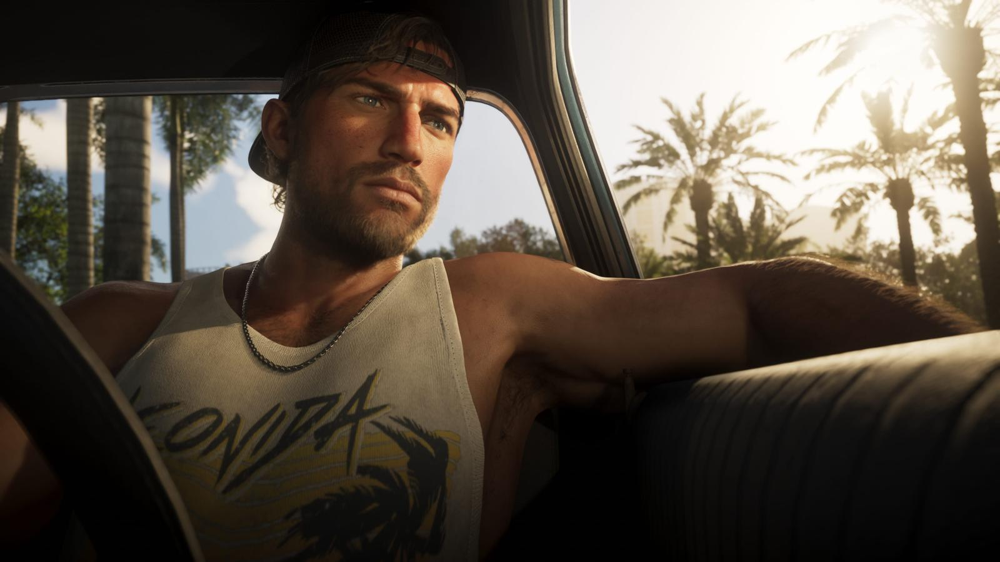
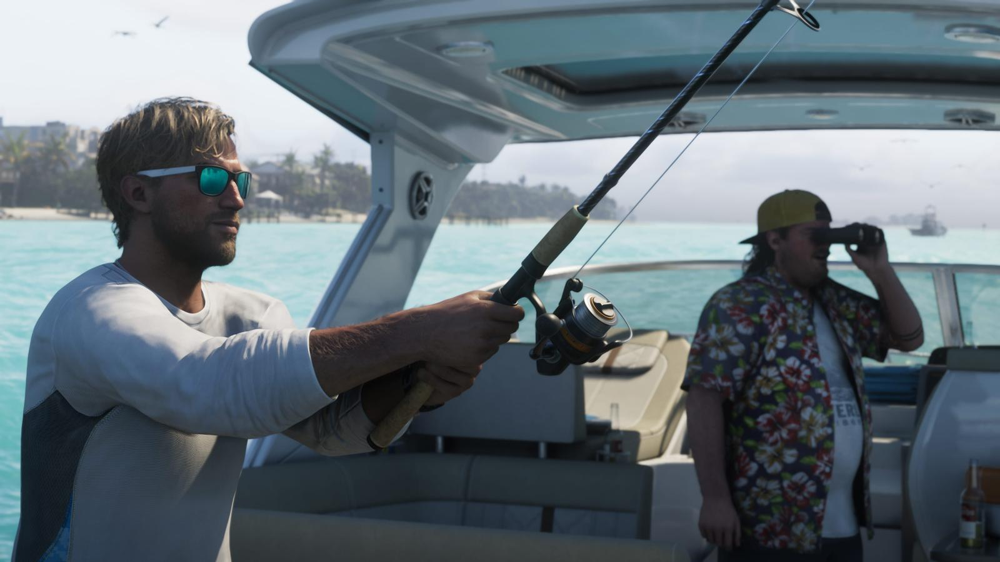
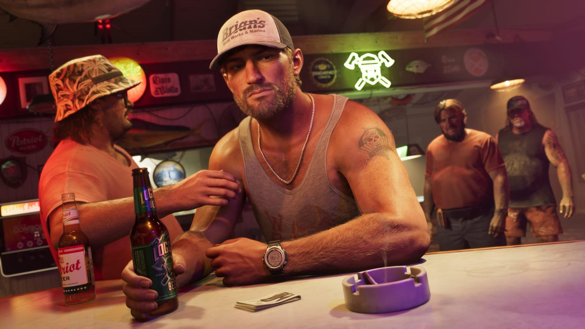
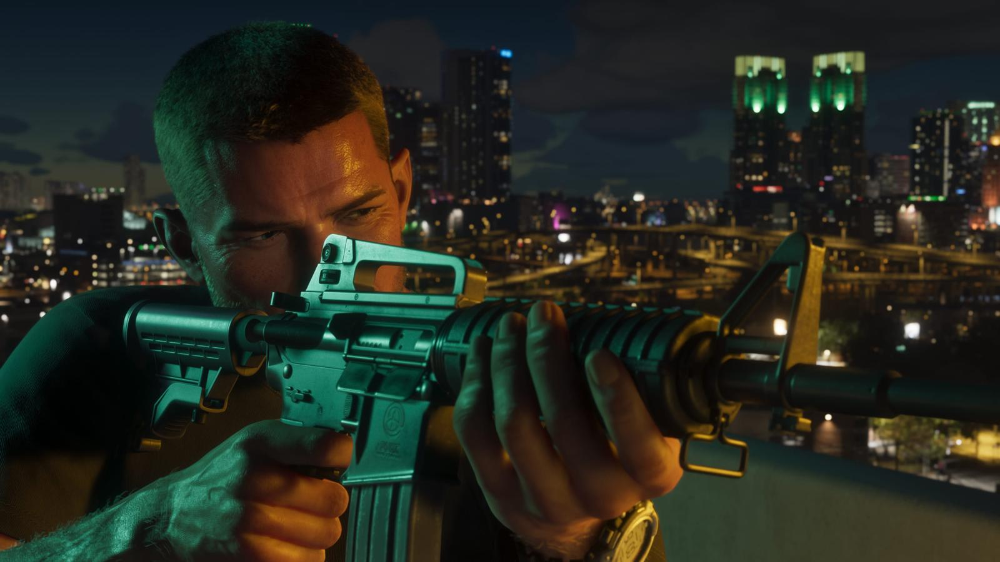

Джейсон Дюваль — главный герой GTA 6
Обновлено: 24.09.2026

Коротко
- Второй главный герой GTA 6, партнёр Лусии.
- Вырос среди мошенников и преступников.
- Служил в армии.
- Работал на наркокурьеров в Leonida Keys.
Содержание
Кто он
Джейсон Дюваль хочет лёгкой жизни, но всё становится только сложнее. Он второй главный герой и напарник Лусии.
Прошлое
Джейсон вырос в окружении мошенников и преступников. После службы в армии он оказался в Кис и работал на местных наркокурьеров. Живёт в доме контрабандиста Брайана Хедера бесплатно, в обмен на помощь.

Джейсон и Лусия
Отношения с Лусией могут стать для Джейсона лучшим, что с ним случалось, — или худшим. О Лусии — Лусия Каминос — главная героиня GTA 6.

Галерея


Источники: Rockstar Games — официальный сайт GTA VI (rockstargames.com/VI), Rockstar Newswire.